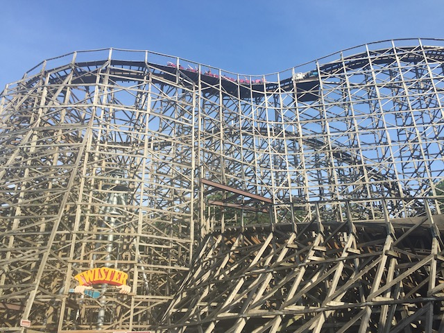
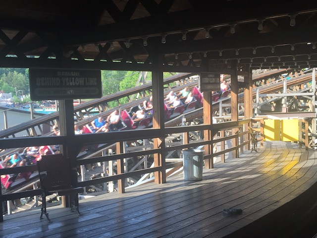
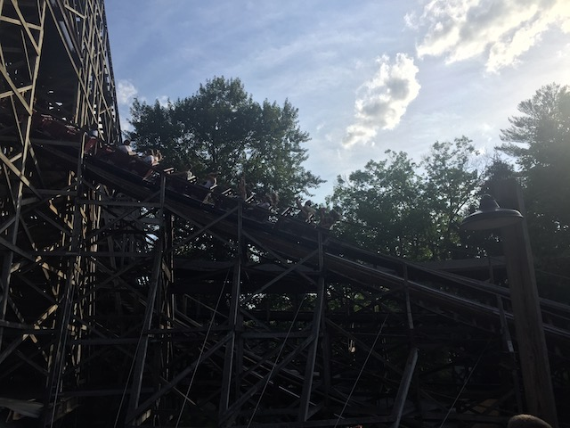
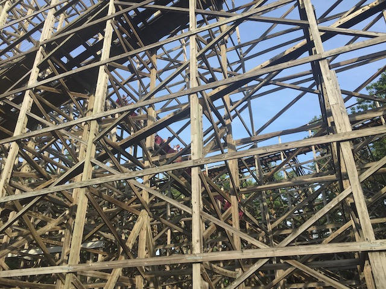
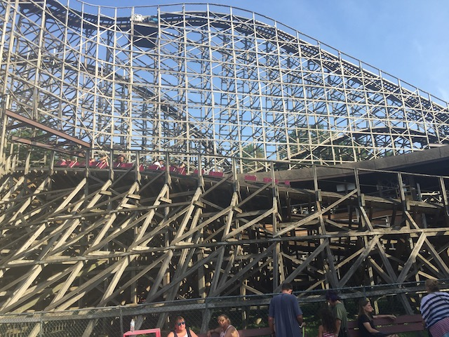
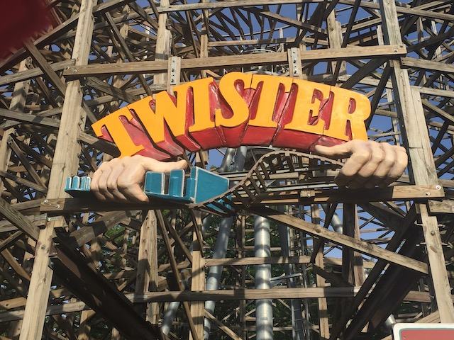

| |
Twister Review

We're here at Knoebels. Today, we're here to review Twister. Now this ride was inspired by the old Mr. Twister roller coaster back at Elitch Gardens. However, when the park moved, they had to tear down Mr. Twister and had to replace it with Twister II which still resides at Elitch Gardens today. Well, that ride sucks. But don't worry. This ride is MUCH better. We make it to the station, pull down the lap bar and we're off!!! We start off with a small dip out of the station that provides us with some fun speed that leads us into a turn right under the structure. Yeah, that's a lot of wood. However, we come out of that and begin to climb the lifthill. This lifthill is pretty cool it is directly underneath the other lifthill of the ride. Yep, this ride has two lifthills. Yeah. One lifthill just wasn't enough for Twister, so it had to go and get another lifthill because this ride is special. After that first lifthill, we begin to gain a little speed. Not much, but we're still moving. We start to head up into a turn that gives us some mild laterals until we start to climb lifthill #2. Now from this lifthill, we begin to get a pretty good view of Knoebels. However, we then crest the lifthill. We begin to go through a couple of twisty bits, but soon enough, we begin to go through what we all wanted. The first drop. It's a very fun first drop that just sucks you straight into the big wooden pit of madness. So yeah. It gains quite a lot of speed quickly here. We then rise up into a big turnaround. While there's no airtime here, we do have the pleasure of getting some good laterals in this part of the ride. We then drop back down and get a little airtime. It's not much, but it's still a lot of fun. And the headchoppers do add a lot to the ride. This then leads us into a big turn that just leads us into the giant bowl helix. While not really a helix, it's a giant swooping turn that gives you a lot of crazy laterals before rising up, taking a breather break, and then doing the same thing right next to the old one. So yeah. That's a lot of fun. We then come out of the bowl helix and rise up a small hill. There's no airtime, but still. We're having fun. We then go into a big turn around that gives us some nice speed and laterals. You then come out and go a small hill before heading back into our giant ongoing turn underneath the structure. Then suddenly out of nowhere, a tunnel just appears and without any time to think about it, we just get sucked into it, coninuing our big long turn. We then pop out of that tunnel, and go through a small dip. After that, we head into a slow long turn that acts as our brake run. While Twister isn't a bad ride by any means, it just gets overshadowed by Phoenix, which is a Top 10 Coaster, and next door. But Twister is still a very fun wooden coaster that I would consider above average. Congrats Knoebels. Even their second hand woodie is still above average. I'd give it a ride if you're at Knoebels. It's very fun.
7/10
Location: Knoebels
Opened: 1999
Built by: Knoebels
Last Ridden: June 26, 2021
Twister Photos









Home
|